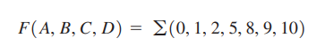
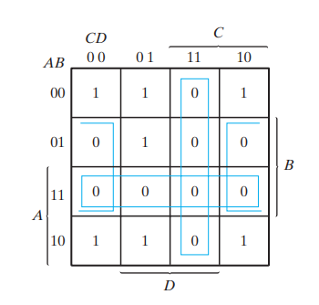
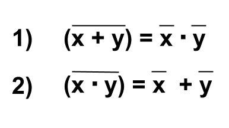
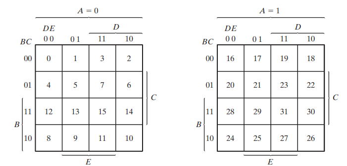

Simplifique la siguiente función booleana en forma de
a) suma de productos
b) producto de sumas

Diapositiva 5
a)
F’ = AB + CD + BD’
b)Al aplicar el teorema de DeMorgan (obteniendo el dual y complementando cada literal) se obtiene la función simplificada en forma de producto de sumas:
F = (A’ + B’)(C’ + D’)(B’+ D)


Mapa de 5 Variables
Un mapa de cinco variables necesita 32 cuadrados
El mapa de cinco variables se muestra en la figura 3-12. Consta de dos mapas de cuatro variables con las variables A, B, C, D y E. La variable A distingue a los dos mapas, como se indica en la parte superior del diagrama. El mapa de cuatro variables de la izquierda representa los 16 cuadrados en los que A=0; el otro representa los cuadrados en los que A=1.
Mapa de 5 variables

Condiciones de Indiferencia
Hay algunas aplicaciones en las que la función no está especificada para ciertas combinaciones de las variables
En casi todas las aplicaciones, es irrelevante el valor que asuma la función para los minitérminos no especificados. Por ello, se acostumbra llamar condiciones de indiferencia (don’t care, en inglés) a los minitérminos no especificados de una función. Conviene usar estas condiciones de indiferencia en el mapa para simplificar aún más la